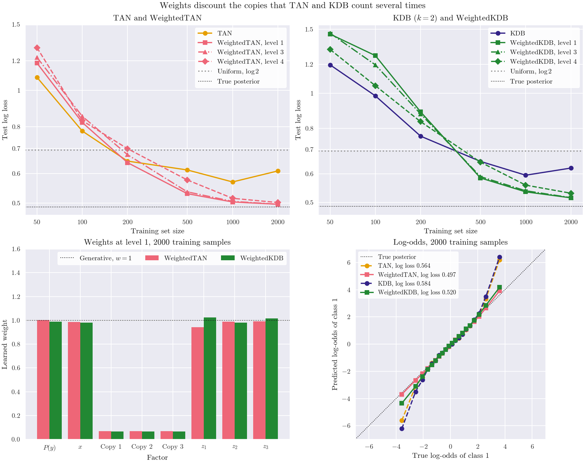

Note
Go to the end to download the full example code.
Weighted TAN and KDB on duplicated attributes#
skbn.WeightedTAN and skbn.WeightedKDB keep the structure
and the probabilities of skbn.TAN and skbn.KDB, and put an
exponent weight on every factor of the joint: the class prior and the
conditional of each attribute. The weights maximise the conditional
log-likelihood of the training set, starting at, and penalized towards
(l2_reg), the generative model w = 1. What does that buy?
The data have seven Gaussian attributes: $x$, informative, three exact
copies of $x$, and three more informative attributes $z_1, z_2, z_3$,
independent of $x$ given the class. A discrete copy of a discrete parent
would be harmless, since its conditional given the parent is close to 1. A
continuous parent is discretized, though (five bins of equal frequency by
default): each copy is Gaussian given only the bin of its parent, so it
still carries part of the evidence of $x$, and the networks count that
evidence up to four times. The KDB has k=2.
The top panels give the test log loss as the training set grows, averaged over three training sets, for the generative models and the weighted ones at levels 1 (one weight per factor), 3 (per factor and class) and 4 (per factor, class and parent bins, the default). The attributes are all Gaussian, and the value of a Gaussian child does not index its weights, so level 2 is level 1 here and is not drawn. With 50 and 100 samples every model does worse than predicting 1/2 for each class, and the weights make it worse still: they overfit the training set. TAN and KDB level off around a log loss of 0.6, whatever the size. The weights lower it from 200 samples on for WeightedTAN at level 1 and from 500 on at every level, down to 0.50 (WeightedTAN) and 0.52 (WeightedKDB) with 2,000 samples, against the 0.49 of the true posterior. From 500 samples on, levels 1 and 3 gain the most; level 4, with a weight per parent bin, needs more data and stays behind them.
The bottom left panel gives the weights learned at level 1 on 2,000 samples: those of the three copies fall to 0.07, and the others stay close to 1. The right panel shows the effect on the probabilities: the log-odds of the models against the true ones, averaged in bins. The generative networks are right near 0 but much too confident in the tails, where the outer bins of $x$ are wide and the copies repeat most of its evidence. A line fitted to the log-odds of the test samples has a slope of 1.36 for TAN and 1.44 for KDB, and of 1.04 and 1.14 for the weighted models.

Log loss of the true posterior: 0.488
TAN log loss [1.084 0.779 0.648 0.613 0.57 0.61 ]
WeightedTAN, level 1 log loss [1.183 0.821 0.642 0.53 0.504 0.497]
WeightedTAN, level 3 log loss [1.226 0.853 0.674 0.536 0.506 0.497]
WeightedTAN, level 4 log loss [1.301 0.831 0.699 0.577 0.515 0.502]
KDB log loss [1.197 0.983 0.762 0.649 0.595 0.622]
WeightedKDB, level 1 log loss [1.454 1.269 0.888 0.584 0.535 0.515]
WeightedKDB, level 3 log loss [1.463 1.197 0.877 0.589 0.539 0.516]
WeightedKDB, level 4 log loss [1.32 1.049 0.835 0.646 0.558 0.53 ]
WeightedTAN weights at level 1: [1. 0.98 0.07 0.07 0.07 0.94 0.99 0.99]
WeightedKDB weights at level 1: [0.99 0.98 0.07 0.07 0.07 1.02 0.98 1.02]
TAN log loss 0.564, log-odds 1.36 times the true ones
WeightedTAN log loss 0.497, log-odds 1.04 times the true ones
KDB log loss 0.584, log-odds 1.44 times the true ones
WeightedKDB log loss 0.520, log-odds 1.14 times the true ones
# Author: The scikit-bayes Developers
# SPDX-License-Identifier: BSD-3-Clause
import matplotlib.pyplot as plt
import numpy as np
from matplotlib.ticker import NullLocator, StrMethodFormatter
from sklearn.metrics import log_loss
from skbn import KDB, TAN, WeightedKDB, WeightedTAN
N_COPIES = 3
def make_data(n_samples, rng):
y = rng.randint(0, 2, size=n_samples)
x = rng.normal(size=n_samples) + y
z = rng.normal(size=(n_samples, 3)) + 0.6 * y[:, None]
return np.column_stack([x] + [x] * N_COPIES + [z]), y
def true_log_odds(X):
"""log P(y=1 | x) - log P(y=0 | x) of the model that generated the data,
which depends on x once and on the z."""
return X[:, 0] - 0.5 + 0.6 * (X[:, -3:] - 0.3).sum(axis=1)
def log_odds(model, X):
log_proba = model.predict_log_proba(X)
return log_proba[:, 1] - log_proba[:, 0]
labels = ["$P(y)$", "$x$", "Copy 1", "Copy 2", "Copy 3", "$z_1$", "$z_2$", "$z_3$"]
rng = np.random.RandomState(0)
X_test, y_test = make_data(10000, rng)
bayes = true_log_odds(X_test)
bayes_loss = log_loss(y_test, 1 / (1 + np.exp(-bayes)))
print(f"Log loss of the true posterior: {bayes_loss:.3f}")
# Name: factory, colour, line style, marker. One colour per model; the weight
# level by line style and marker
networks = {
"TAN": [
("TAN", lambda: TAN(), "#E69F00", "-", "o"),
("Level 1", lambda: WeightedTAN(weight_level=1), "#EE6677", "-", "s"),
("Level 3", lambda: WeightedTAN(weight_level=3), "#EE6677", "-.", "^"),
("Level 4", lambda: WeightedTAN(weight_level=4), "#EE6677", "--", "D"),
],
"KDB": [
("KDB", lambda: KDB(k=2), "#332288", "-", "o"),
("Level 1", lambda: WeightedKDB(k=2, weight_level=1), "#228833", "-", "s"),
("Level 3", lambda: WeightedKDB(k=2, weight_level=3), "#228833", "-.", "^"),
("Level 4", lambda: WeightedKDB(k=2, weight_level=4), "#228833", "--", "D"),
],
}
# Test log loss, averaged over three training sets of every size
seeds = [1, 2, 3]
sizes = [50, 100, 200, 500, 1000, 2000]
losses = {
family: np.zeros((len(sizes), len(models))) for family, models in networks.items()
}
for j, n in enumerate(sizes):
for seed in seeds:
X_train, y_train = make_data(n, np.random.RandomState(seed))
for family, models in networks.items():
for k, (_, factory, *_) in enumerate(models):
proba = factory().fit(X_train, y_train).predict_proba(X_test)
losses[family][j, k] += log_loss(y_test, proba) / len(seeds)
for family, models in networks.items():
for k, (name, *_) in enumerate(models):
label = name if k == 0 else f"Weighted{family}, {name.lower()}"
print(f"{label:23s} log loss {np.round(losses[family][:, k], 3)}")
# Weights at level 1 and probabilities, on 2,000 training samples
X_train, y_train = make_data(2000, np.random.RandomState(seeds[0]))
fitted = {}
for name, factory, color in [
("TAN", lambda: TAN(), "#E69F00"),
("WeightedTAN", lambda: WeightedTAN(weight_level=1), "#EE6677"),
("KDB", lambda: KDB(k=2), "#332288"),
("WeightedKDB", lambda: WeightedKDB(k=2, weight_level=1), "#228833"),
]:
fitted[name] = (factory().fit(X_train, y_train), color)
# At weight_level=1 there is one weight for the class prior and one for the
# conditional of every attribute
weights = {
name: np.concatenate(
[fitted[name][0].prior_weights_]
+ [w.ravel() for w in fitted[name][0].feature_weights_]
)
for name in ("WeightedTAN", "WeightedKDB")
}
for name, w in weights.items():
print(f"{name} weights at level 1: {np.round(w, 2)}")
fig, axes = plt.subplots(2, 2, figsize=(12, 9.5))
# Test log loss against the training set size
for ax, (family, models) in zip(axes[0], networks.items()):
for k, (name, _, color, style, marker) in enumerate(models):
label = name if k == 0 else f"Weighted{family}, {name.lower()}"
ax.plot(
sizes,
losses[family][:, k],
color=color,
ls=style,
marker=marker,
label=label,
)
ax.axhline(np.log(2), color="#999999", ls=":", label="Uniform, $\\log 2$")
ax.axhline(bayes_loss, color="#1A1A1A", ls=":", lw=1, label="True posterior")
ax.set_xscale("log")
ax.set_yscale("log")
ax.set_xticks(sizes)
ax.set_yticks([0.5, 0.6, 0.7, 0.8, 1, 1.2, 1.5])
for axis in (ax.xaxis, ax.yaxis):
axis.set_major_formatter(StrMethodFormatter("{x:g}"))
axis.set_minor_locator(NullLocator())
ax.set_xlabel("Training set size")
ax.set_ylabel("Test log loss")
ax.legend(loc="upper right")
axes[0, 0].set_title("TAN and WeightedTAN")
axes[0, 1].set_title("KDB ($k = 2$) and WeightedKDB")
# Weights at level 1
ax = axes[1, 0]
positions = np.arange(len(labels))
for offset, (name, w) in zip((-0.2, 0.2), weights.items()):
ax.bar(positions + offset, w, width=0.4, color=fitted[name][1], label=name)
ax.axhline(1, color="#1A1A1A", ls=":", lw=1, label="Generative, $w = 1$")
ax.set_xticks(positions, labels)
ax.set_ylim(0, 1.6)
ax.set_xlabel("Factor")
ax.set_ylabel("Learned weight")
ax.set_title("Weights at level 1, 2000 training samples")
ax.legend(loc="upper right", ncol=3)
# Log-odds of the models against those of the true posterior, averaged
# over 20 bins of equal frequency of the true log-odds
ax = axes[1, 1]
edges = np.quantile(bayes, np.linspace(0, 1, 21))
bin_of = np.clip(np.searchsorted(edges, bayes, side="right") - 1, 0, 19)
counts = np.bincount(bin_of, minlength=20)
mean_bayes = np.bincount(bin_of, weights=bayes, minlength=20) / counts
ax.plot([-7, 7], [-7, 7], color="#1A1A1A", ls=":", lw=1, label="True posterior")
for name, (model, color) in fitted.items():
odds = log_odds(model, X_test)
slope = np.polyfit(bayes, odds, 1)[0]
loss = log_loss(y_test, model.predict_proba(X_test))
print(f"{name:11s} log loss {loss:.3f}, log-odds {slope:.2f} times the true ones")
weighted = name.startswith("Weighted")
ax.plot(
mean_bayes,
np.bincount(bin_of, weights=odds, minlength=20) / counts,
color=color,
ls="-" if weighted else "--",
marker="s" if weighted else "o",
label=f"{name}, log loss {loss:.3f}",
)
ax.set_xlim(-7, 7)
ax.set_ylim(-7, 7)
ax.set_xticks(range(-6, 7, 2))
ax.set_yticks(range(-6, 7, 2))
ax.set_box_aspect(1)
ax.set_xlabel("True log-odds of class 1")
ax.set_ylabel("Predicted log-odds of class 1")
ax.set_title("Log-odds, 2000 training samples")
ax.legend(loc="upper left", fontsize=9)
fig.suptitle("Weights discount the copies that TAN and KDB count several times")
plt.show()
Total running time of the script: (0 minutes 4.107 seconds)